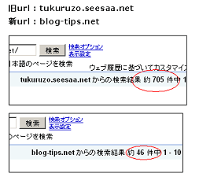
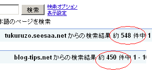

ブログの独自ドメイン化から１ヶ月目のインデックス状況
当ブログを独自ドメインに変更してから約１ヶ月が経過しておりますが、新しいドメインでのインデックス数が徐々に増えてきました。
新URLでのインデックス数が増えるにつれ、旧URLでのインデックス数は減少してきてますが、約１か月で150程度が減少したようです。
独自ドメイン化後の重複インデックスについて
現在のところ、新・旧のURLが共に検索結果上にあり、どちらも検索結果でヒットする状態になっているようです。
こちらは１ヶ月ぐらい前に独自ドメイン化した直後に調べたインデックス数になります。

こちらは約１ヶ月経過した今日調べたインデックス数です。

アクセス数でいうと、独自ドメイン化した前後でほとんど変化はありませんが、新旧のサイトで同じページが存在してますので、重複してインデックスされているようです。
新しいURLは検索ではヒットしずらくなるといわれており、いわゆるエイジングフィルターに引っかかるのではとも思ったのですが、アクセス解析を見てみると新URLでもちらほらヒットしているようでした。
また、重複しているURLがあると、スパムになるということも聞いたことがありますが、リダイレクト設定をすれば、特に問題はないように感じてます。
このことから判断するに、ブログの独自ドメイン化や引越しをする場合、できるだけ旧URLは削除せず、保持しておく必要があると思います。
重複URLがあると、スパムになってしまうからということで、旧URLを削除してしまう人もいるかもしれませんが、新旧のURLはともに保有してリダイレクト設定をしておく必要があると感じました。
レンタルサーバーの場合は .htaccessでのリダイレクト設定ができると思いますが、無料ブログの場合でもメタタグの0秒リダイレクトで設定しておけば、検索エンジン側でも修正してくれるものと思います。
ちなみに、旧サイトについてはウェブマスターツールからの登録を削除し、関連サイトからの被リンクも新しいドメインへ変更しています。
このインデックス状況はまた来月調べてみる予定です。
- 独自ドメイン化ブログのインデックス推移
以前に、独自ドメインを取得してシーサーブログを独自ドメイン化してみたのですが、新ドメインへのインデックス移行もスムーズに完了し、ブログの引越しが無事終了したようなんです。そのブログではページランクもみ... - htaccess ファイルって何だろう？
ホームページ作成の際、.htaccess と robots.txt のファイル設定は基本的な設定事項としてよく出てきますが、両方ともなきゃないでもいいっぽい気もします。 .htaccess のファイ... - ブログ引越しの重複インデックスとSEO
以前の記事で、ブログを独自ドメイン化して、新規 url に引越ししたシーサーブログのSEO効果について書いていたのですが、その後、インデックス数、複合キーワードでの検索ヒット数、総アクセス数の方がのき... - ブログ引越しのSEO対策
わたしのシーサーブログのなかで、時間をかけたもののアクセスしょぼしょぼのしょぼいブログがあるんですけど、独自ドメイン化したら少しでもアクセスアップになるかな？と思い、今日、新ドメインへブログの引越しを...